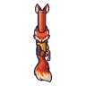
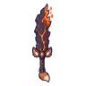

จิ้งจอกถ่านแดง
มอนธาตุไฟ Lv 32–45
เจอที่
| แมพ | โซน | Lv | ภูมิภาค |
|---|---|---|---|
| ป่าไหม้ถ่านคุ | 38–43 | ที่ราบสูง | |
| ป่าไหม้ถ่านคุ | ทุ่งเถ้าถ่าน | 41–45 | ที่ราบสูง |
| ทุ่งตอไม้ควันขาว | 32–45 | ที่ราบสูง | |
| หุบเถ้าลอย | 32–45 | ที่ราบสูง | |
| ป่าที่ยังไหม้ | 32–45 | ที่ราบสูง | |
| ป่าที่ยังไหม้ | ต้นไม้ไฟนิรันดร์ | 41–45 | ที่ราบสูง |
| หอรากมืด (Dark Root) | เส้นเลือดถ่านไฟ | 33–42 |
ค่าสถานะตามเลเวล
| Lv | HP | ATK | DEF | MDEF | EXP | Job |
|---|---|---|---|---|---|---|
| 32 | 3,069 | 60–89 | 10 | 6 | 42 | 32 |
| 38 | 4,936 | 79–119 | 12 | 7 | 49 | 37 |
| 45 | 7,967 | 97–145 | 14 | 8 | 56 | 42 |
ตีด้วยธาตุไหนดี
แรงขึ้น: น้ำ ×1.5 พิษ ×1.25
เบาลง: ดิน ×0.5 ไฟ ×0.25
วัตถุดิบที่ดรอป
| ของ | โอกาส | |
|---|---|---|
| ปลายหางไฟจิ้งจอก | 55% | 1 ชิ้น (15% ได้ 2) |
อุปกรณ์ที่ดรอป (10)
| ของ | โอกาส |
|---|---|
| 0.12% | |
| 0.12% | |
| 0.12% | |
| 0.12% | |
 ลูกซองหางจิ้งจอกถ่าน | 0.12% |
| 0.06% | |
 ดาบใหญ่ถ่านแดง | 0.06% |
| 0.06% | |
| 0.06% | |
| 0.06% |
สกิล
หลบ (Lv 25+) · หลบ (Lv 60+) · วาร์ป (Lv 60+)